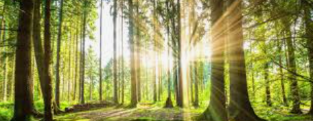

Persoonlijk
Op een mistige herfstochtend in een klein dorpje aan de rand van het bos, werd Thomas wakker door het zachte geklop op zijn raam. Hij schoof de gordijnen opzij en zag een vogel die, ondanks de koude nevel, op de vensterbank zat te tikken. Het was een zwarte kraai met heldere, nieuwsgierige ogen. Thomas, die altijd al een beetje bijgelovig was, voelde een rilling langs zijn rug lopen. Het leek alsof de kraai iets wilde zeggen, een boodschap van groot belang.
